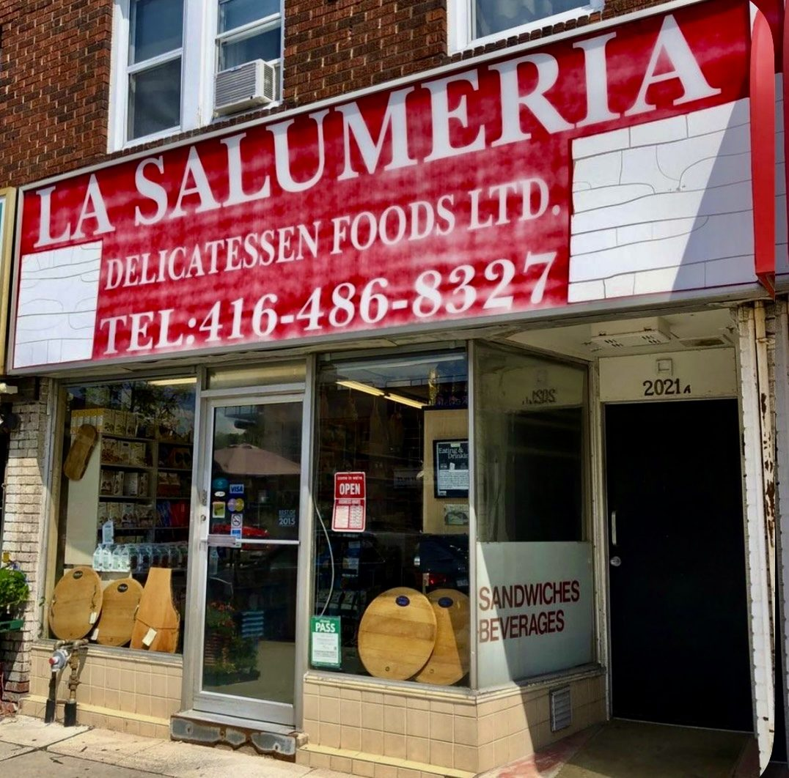

Italian deli & grocery · Yonge & Davisville · Since 1984
An old-school Italian deli, with one of the city’s great sandwiches.
Cured meats, cheeses, olive oils and Italian imports, packed into a Yonge Street shop that’s been here since 1984. Pick a bun, head to the counter, and owner Carlo and the team will build your sandwich.
- House special sandwich
- Cured meats & cheeses
- Italian imports
- Since 1984
What’s inside
Sandwich counter
Made-to-order sandwiches on the bread you choose. Reviewers rave about the house special with fig jam and hot peppers, and the mortadella with pistachio cream and burrata.
Deli case
Prosciutto, salami, mortadella, guanciale and a wide selection of Italian cheeses, sliced to order, per reviewers.
Italian grocery
DOP tomatoes, conserve, olives, olive oils and vinegars, frozen meals and other European imports.
This list comes from Google reviews, review photos and the shop’s Google listing (category: deli). Take-out only. No prices are shown because the shop doesn’t publish a menu or price list online.
How it works
Pick a bun, then order
- Pick your bread from the rack at the front: ciabatta, baguette or kaiser.
- Take it to the deli counter at the back and order.
- Not sure? Ask for the house special.
Since 1984
Founded by Ernesto and Rita Fuda in 1984 and run by Carlo Celebre since 2006, who promised to keep the deli the way they left it.
History as reported by Buonissimo, TasteToronto and Tastet. Ordering steps as described by Google reviewers and Tastet.
What customers say
4.8 ★ from 1,003 Google reviews (checked Nov 5, 2026). Quotes are word for word. Each one says where it was read: on the Google listing itself, or on a public page that copies reviews. Google shows only a handful of reviews without signing in, so some quotes come from directory copies that don’t show reviewer names.
★★★★★
So much more than a traditional or Old school Italian deli serving amazing sandwiches.
Super nice family run place. Met Carlo the owner and the team, friendly, polite and proud of their 42 years at the this location.
Don’t let the interior fool you, this place is *packed* with some of the highest quality ingredients in the city. From the guanciale, DOP tomatoes (only whole peeled tomatoes and tomato puree iykyk) to conservas, frozen meals, quality cheeses, olives and olive oils.
Pick your bread, pick your sandwich, tell them at the deli counter.
Mortabrlla is a personal favourite. Great mortadella, with a lovely pistachio crème. The house special is another favourite, excellent with the fig jam and spicy pickled peppers. Will come to try the Ernesto with the muffleta.
5/5c great products, great service, great atmosphere, great people.
★★★★★
An authentic, old-school Italian delicatessen and grocery store serving sandwiches unlike anything you’ve tried before!
The experience itself is unique. First, you pick your favourite bread from the shelves and hand it to the staff to make your sandwich.
I tried the House Special, and it was absolutely packed with flavour! I’m usually not a fan of tomatoes in sandwiches, but this one completely changed my mind. The real surprise, though, was the FIG JAM! It was incredibly delicious and added such a unique touch. The combination of sweet and spicy flavours made every bite unforgettable.
Definitely one of the most unique sandwiches I’ve ever had. Absolutely coming back to try the rest of their sandwiches!
★★★★★
Italian store well stocked with a large variety of cheeses and cured meats in addition to important items sometimes hard to come by in other places. This store also offers freshly made sandwiches which are a must try’s they have a variety of options but their special is in high demand. You can also make it your own.
★★★★★
Been following this place forever and finally tried a sandwich for the first time.. They did not disappoint.. Wow.. Definitely surpassed my expectations.. I have to admit.. Probably one of the best sandwiches I've ever had and I've had a lot of sandwiches.. So fresh.. So good.. No wonder they've been around for 40+ years.. Place is cute with a lot of European imports.. Also.. Carlo the owner is amazing.. This place is a must try in my opinion.
★★★★★
Honestly the best sandwich I’ve had in Toronto. The bread was fresh, the fillings were generous, and the flavors were so well balanced. All of the staff and the owner are so friendly and provide quick service! My favorite sandwich is the pistachio/ mortadella/ Burrata but my partner often gets the house special and both are equally delicious 😍
★★★★★
I’ve tried many sandwiches in Toronto but this is by far THE BEST I’ve ever had in this city!!! The house special sandwich includes a sweet balsamic glaze, salami, mozzarella, tomato, prosciutto, and a spicy chili sauce. It’s absolutely divine. The sandwich is huge and packed incredibly tightly with fresh ingredients. And the staff were so friendly!
★★★★★
Their signature sandwich is truly unique — and huge! One sandwich is big enough to fill up two people. The flavor is special: a perfect balance of savory meat, a touch of maple sweetness, and the rich aroma of freshly baked bread. Yes, it’s a bit pricey, but honestly so worth it. Highly recommended!
★★★★★
We tried La Salumeria and absolutely loved it! We had the house sandwich and the mortadella sandwich—both were delicious, fresh, and full of flavor. The staff were lovely, friendly, and made us feel very welcome. The only thing to note is that it was extremely busy and the wait for sandwiches was about 30–40 minutes. Totally worth it, but I’d recommend avoiding peak lunchtime on a weekend if you’re not up for waiting. Otherwise, this spot is definitely worth checking out!
Star rating not shown in source
Great sandwich , Excellent service, you need to try.
Star rating not shown in source
My favourite Italian deli in the city!! Their sandwiches are amazing 🤩
Inside the shop
Real photos from La Salumeria’s public Google listing and its customers’ reviews. Tap to enlarge.
Visit the shop
2021 Yonge St
Toronto, ON M4S 2A2
| Monday | Closed |
|---|---|
| Tuesday | 9 a.m.–6 p.m. |
| Wednesday | 9 a.m.–6 p.m. |
| Thursday | 9 a.m.–6 p.m. |
| Friday | 9 a.m.–6 p.m. |
| Saturday | 9 a.m.–6 p.m. |
| Sunday | 9 a.m.–6 p.m. |
These are the hours on Google today. Closed Mondays. Yelp lists a 10 a.m. opening instead of 9, so call if you’re going early. Weekend lunch lines can be long, according to reviewers. Follow the shop on Instagram @lasalumeriatoronto.